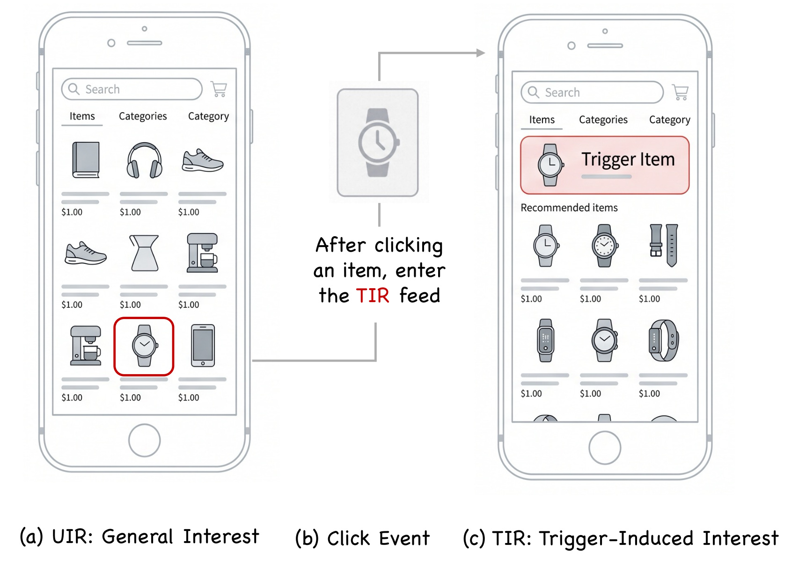
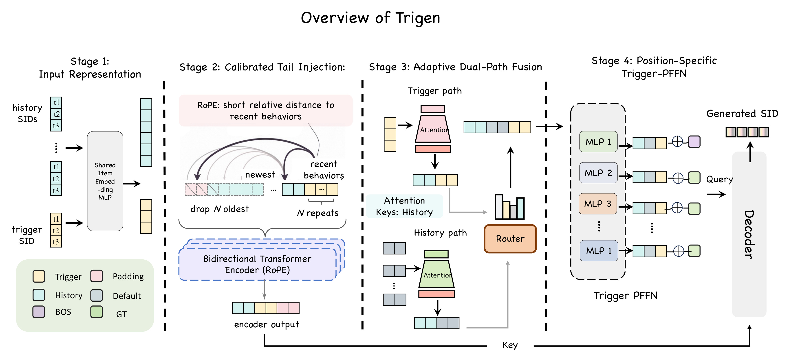
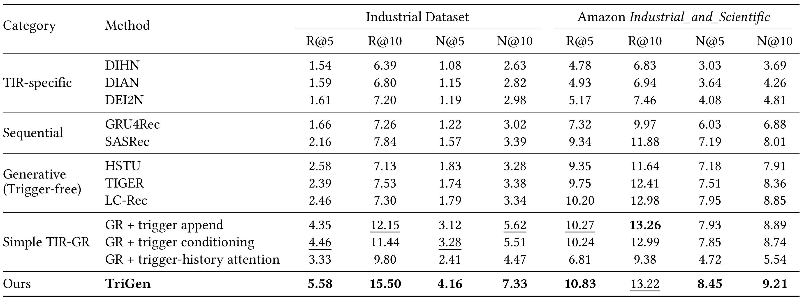
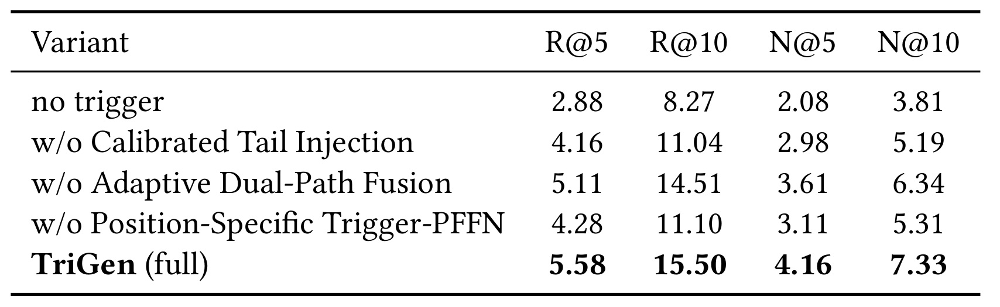
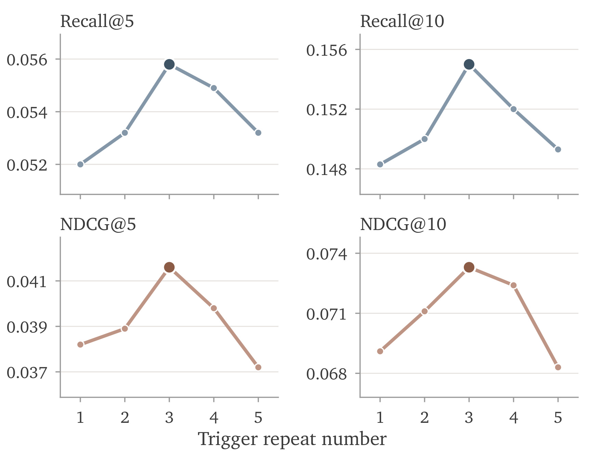
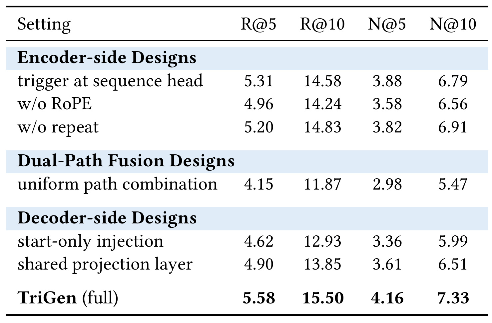
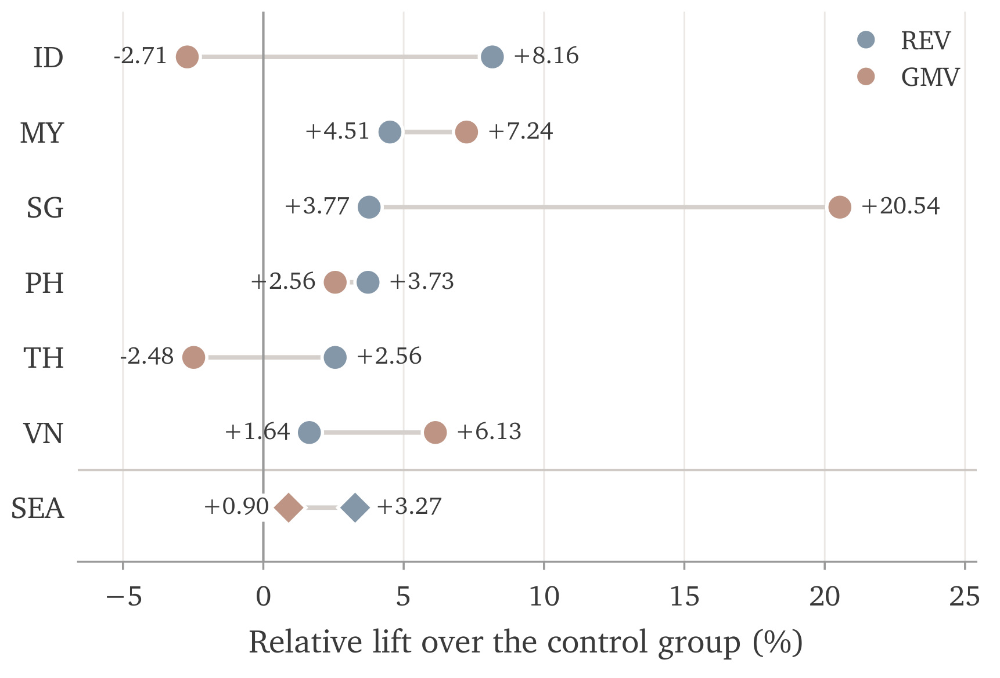
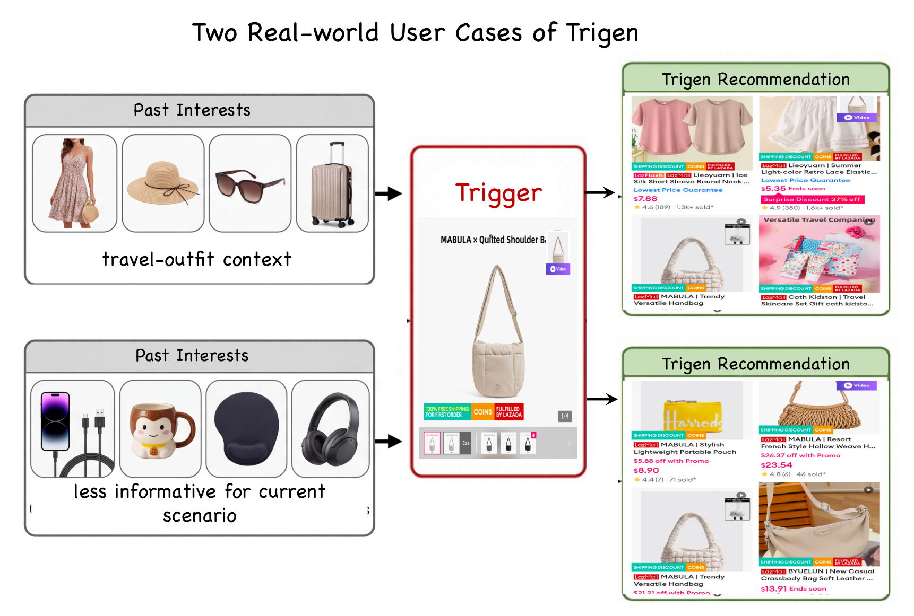

TriGen：面向触发式推荐的生成范式
TriGen: A Generative Paradigm for Trigger-Induced Recommendation 研究点击商品后进入关联信息流时，如何把这次点击的即时意图贯穿到语义 ID 的生成过程。Muyu Zou、Haibo Xing、Shunye Tang 等作者来自阿里巴巴国际数字商业集团、南开大学及独立研究者；一作主机构为阿里国际。论文于 2026 年 11 月 12 日公开，本文按该版原文解读，核验日期为 2026 年 11 月 17 日。论文入口：arXiv:2611.16395。本轮未发现并核验到独立代码仓库，线上部署与效果均为作者报告，未独立复现实验；论文采用 ACM 排版不构成会议录用证明。
触发式推荐既要立即响应用户刚点击商品所表达的意图，又不能丢掉历史偏好的连续性。传统触发式模型依靠判别打分，不能直接指导逐 token 生成；现有生成式推荐则缺少协调这两种需求的机制。
1. 背景和问题
标准语义 ID 生成式推荐通常把用户历史作为条件，预测下一个物品的离散编码。它将过去发生的行为视为当前兴趣的主要依据，适合用户在通用信息流中继续浏览的场景。TriGen 把这种设定称为用户驱动推荐 UIR。点击某件商品并进入详情页关联信息流时，推荐入口已经发生变化：用户刚刚选择的对象具有明确的当前含义，系统需要围绕它继续组织候选，而不能仅按进入页面之前的长期喜好延续推荐。论文把这个被点击的物品称为 trigger，把该场景称为 TIR。两者都使用历史，却对“本次请求为什么发生”有不同解释。

Figure 1 从左到右分别画出通用商品列表、用户点击的手表，以及以这块手表作为固定触发物的后续列表。右侧列表把触发物置于顶部，下面展示关联推荐，这个页面结构使点击不再只是历史序列中新增加的一条记录，而是下一次推荐任务的显式条件。图中既有手表，也有相关配件，提示围绕触发物组织推荐并不必然等于只返回同类物品；但这只是任务示意，图里没有行为反馈、成交金额或模型对照，因此不能据此声称跨品类搭配提高了转化。中间箭头表达入口转换，未给出跨页面时长，也不能把它当作即时意图一定有效的因果证明。理解这幅图最有用的方式，是先固定系统的输入与输出：历史决定这个用户大致偏好什么，触发物决定他此刻为什么来到这个页面，模型输出则仍然是可供展示的物品序列。后文的三个模块都围绕这两个条件如何协作展开，并没有另建一套浏览器 Agent 或商品描述生成任务。
历史偏好与触发意图的冲突具有两面性。若用户长期浏览旅行服装，刚点击一个肩包可能是在继续准备旅行；完全覆盖历史会漏掉上衣、防晒或其他搭配需求。反过来，近期历史也可能全是办公配件，这次肩包点击却代表一次新的购物需求，严格维持原历史分布就难以响应这个转向。偶然点击又带来第三种情况：触发物确实发生了，但不值得把整次推荐完全拉向它。因此，论文需要建模的是条件之间的协调强度，而不仅是保证输入中“存在一个触发物特征”。这些例子解释了模型设计动机，不能替代数据中不同意图类型的频率统计；原文也没有给出一个可直接标注“误触”的监督标签。
已有判别式 TIR 方法已经认识到这种冲突。DIHN 用触发物与目标的交互以及意图估计调节历史；DIAN 区分触发驱动与习惯驱动的访问；DEI2N 进一步考虑即时兴趣随时间变化。它们的原始任务主要是 CTR 预测或匹配打分，给定候选物品后衡量用户是否会响应。语义 ID 生成则要从尚未完成的前缀继续选择码本 token，候选物品的完整身份还没有确定。因此，把一个最终物品级的触发打分模块直接搬到生成器，并不能说明前几层编码应该怎样偏移、后几层应保留什么细节。TriGen 的问题有特定的生成链路背景，不宜概括成所有推荐模型都遗漏即时兴趣。
一个看似直接的解决办法是把触发物接到历史末尾，让 Transformer 自己学习其作用；另一个办法是将同一个触发向量加到每个解码输入上。论文确实将这些方式作为简单基线，而不是假定它们必然无效。它提出的疑问是：长历史会不会稀释单次触发信号，重复触发又会不会挤占有效历史；触发相关历史与用户的一般偏好是否需要分别汇总；同一个条件投影能否适合语义 ID 的不同量化层。上述问题分别对应尾部注入、双路径融合、按位置投影。三处设计构成一条连贯机制：先改变局部历史解释，再构造请求相关条件，最后把条件持续送入生成过程。
这里需要区分“量化层级”和“人工语义属性”。残差量化通常逐步逼近物品表示，早期码与后期残差码有不同统计角色，但原文并没有证明每一层恰好对应品类、颜色、材质等可解释标签。论文用由粗到细来解释按位置条件化的直觉，读者可以接受位置分布不同这一点，却不应把某个 token 层固定翻译成某个业务属性。同样，RoPE 提供的是相对位置建模能力，触发物放在尾部使它靠近近期行为，并不意味着注意力天然只看局部，也不保证学习到的相似性一定符合业务语义。后面的细节消融支持具体配置有效，不能充当这两种更强解释的数学证明。
TriGen 也把离线构造与真实入口分开。工业数据具有独立的真实触发字段；Amazon 公共数据没有这种字段，只能把最近一次历史行为提出来当作模拟触发。两者的任务条件差异很大：真实点击表达“此刻主动选择了什么”，模拟字段只是重排了已有历史的信息。公平比较要求普通序列基线仍看到原来的完整历史，不能把取出的最后一个物品从它们输入里删除。作者明确采用这一规则，所以公共实验测到的是显式结构化利用同一信息是否有帮助，而不是给 TriGen 多喂一个最近行为造成的优势。这也是阅读结果时必须保留的边界。
从应用范围看，这项研究对商品详情关联流、点进某条内容后的相似内容流，以及具有明确点击来源的生成召回更直接。若目标服务没有单一触发物、同时有搜索词和多个短期行为，或兴趣本来就在一个连续播放会话中快速漂移，输入定义就已经改变，不能无修改套用论文的单触发结构。论文贡献不是替代用户建模，而是在保留历史连续性的条件下让一次明确动作有机会改变生成分布。评估也应同时观察即时响应与长期偏好的损失，而不能只看某一个单点召回数字。这个问题设定使本文具有工程迁移价值，但迁移条件必须与真实入口一致。
2. 方法
2.1 固定语义 ID 与触发条件生成
每个物品先被表示为多个码本 token，每个位置只从对应的词表中选取一个离散编码。模型生成的是一个可映射到商品索引的短元组，而非直接对完整商品全集逐个打分；共享前缀让不同物品能够共用部分生成路径，同时也使前缀选错会影响后续可达物品。原文式（1）与式（2）分别给出表示和普通生成分解：
符号解释：$i$ 是物品，$L$ 是语义 ID 层数，$c_i^{(l)}$ 是第 $l$ 层离散编码，$\mathcal V_l$ 是该层码本词表。这不是自然语言描述生成，输出需要映射回物品索引。公共数据使用三层、每层 256 个码；工业配置是八层、每层 300 个码，层数不同会改变连续生成的长度。
符号解释：$S_u$ 为用户历史，$T+1$ 表示下一目标物品，$c^{(<l)}$ 是已知或已生成的前缀。每层概率依赖历史和前缀，训练采用真实前缀，推理采用模型生成前缀；这一区别使生成误差可能继续向后传播，后续条件注入并没有自动消除这一训练与推理差异。引入触发物后，式（3）变为：
符号解释：$c_{tr}$ 是触发物的语义 ID。增加条件本身只是问题定义，尚未指定它在模型内怎样起作用。TriGen 接下来的结构正是实现这个条件依赖，而非把触发物仅作为训练辅助标签；推理请求仍必须提供它。 物品的标题与描述先经文本模型编码，再通过残差量化自编码器形成固定 SID。附录式（10）写为：
符号解释：$r_l$ 为第 $l$ 层残差，$E_k^{(l)}$ 是该层第 $k$ 个码向量；首层残差是编码器输出 $z_i$。每层选择最近码并将未解释部分传给下一层，码向量相加重建量化表示。公共配置把 2560 维文本向量压到 32 维，每个码本也在 32 维空间；最后一层采用 Sinkhorn 分配缓解碰撞，但并未保证每个物品有独一无二的编码。
符号解释：$x_i$ 是文本向量，$\hat z_i$ 为各层码向量之和，$\operatorname{Dec}$ 为重建解码器，$\operatorname{sg}$ 表示停止梯度，$\beta=0.25$ 为承诺项权重。这是附录式（11）的 tokenizer 目标，不能误当推荐器的总损失。SID 生成一次后被冻结，推荐训练不再反传到 tokenizer；推荐器学习预测这些固定码。公共数据 3,686 个物品对应 3,670 个不同码元组，评估将碰撞元组展开为多个物品并连续占据排名位置，因此有效列表长度与碰撞处理有关。
2.2 校准尾部注入

Figure 2 展示四个阶段。最左侧把历史与触发物的 SID 转为共享物品表示，黄色标识触发、浅青色标识历史。第二阶段在固定长度窗口尾部插入若干触发副本，并从左边丢弃相同数量的最老位置；双向 RoPE 编码器随后输出带触发上下文的序列，这条输出沿底部长线送入解码器的交叉注意力。第三阶段不是把编码输出简单池化，而是对原始历史构造触发查询路径和默认查询路径，再由 Router 生成融合条件。第四阶段为不同 SID 位置配备不同 MLP，将对应条件加到开始符或前一目标 token 的嵌入上。绿色 GT 表示训练时的真实前缀，推理时该位置会换成已经生成的 token，不能理解成线上也能取得未来目标。
阅读连线时最需要保留的是两条历史通路的区别。尾部注入让编码器内部历史表示受触发影响；双路径式（5）明确从未扰动的历史取得键和值，使“原本的偏好”仍有一个不被注入完全覆盖的条件来源。原文总述中对编码输出供融合的描述较宽泛，复现时应以式（5）明确规定的原始历史为准，不能把两者随意替换。图中的默认查询是可学习参数，不是没有触发时临时填一个零向量。多个 MLP 表达位置特定参数化，也不是让不同物品使用不同网络。整幅图证明的是架构如何连接，不包含训练完成后门控权重的分布，更没有显示模型已经准确识别了偶然点击；后者需要独立行为分析才能确认。 尾部注入的原文式（4）为：
符号解释：$H=(h_1,\ldots,h_M)$ 是固定长度 $M$ 的历史表示窗口，$e_{trg}$ 为触发物向量，$N$ 是重复次数。替换后仍有 $M$ 个位置，所以改善不能归因于单纯扩展上下文预算。重复增加触发在自注意力中占用的键、值和查询位置，同时牺牲最老位置；它调节的是表示资源和相对位置结构，不是简单给最终物品分数乘一个常数。较大的 $N$ 可能压过历史，较小的 $N$ 又可能被长序列稀释，故需要实验校准。
双向编码器对 $\widetilde H$ 编码得到 $O$，给解码交叉注意力提供上下文。RoPE 让触发与近期行为之间的相对距离可被利用，尾部位置因此有结构上的意义，但不会硬性屏蔽远处历史。公共数据抽取触发后最多九个历史物品，左填充到十二位，仅插入一次触发并删除一个最左填充位；工业历史较长，使用三次重复。因此不能把工业最优次数机械复制到公共数据，更不能说重复三次永远最优。重复动作在训练和推理都存在，线上要保持历史截断、填充方向和触发位置一致。
2.3 自适应双路径融合
双路径模块对每个 SID 解码位置分别生成两个向量。虽然它们最终都服务于同一目标 token 预测，查询来源被结构性地区分，避免用一个已经混合触发的汇总向量同时代替两种偏好条件。触发路径用触发表示投影成查询，寻找原始历史中与当前意图相关的部分；历史路径用可学习默认查询汇总不依赖触发的偏好。式（5）为：
符号解释：$t_l$ 为触发路径条件，$h_l$ 为历史路径条件；$W_l^{tr}$ 把触发向量投影成第 $l$ 个查询，$q_l^{def}$ 是该位置的默认查询；$W_K,W_V$ 是共享历史键值投影，$d$ 是向量维度。这里 $h_l$ 的下标指条件位置，不能与原始历史中第 $l$ 条行为混淆。两条路径看到相同的历史值，只因查询不同而形成不同汇总，所谓解耦是一种结构约束，不等于已经获得统计独立或因果可辨识的兴趣因素。 路由器先对两条条件序列分别求均值，再预测每个位置的融合系数。式（6）为：
符号解释：$w=(w_1,\ldots,w_L)$，$\sigma$ 是逐元素 sigmoid，$\Vert$ 表示拼接，$W_r,b_r$ 是可学习参数，$c_l$ 是第 $l$ 层最终条件。每个 $w_l$ 在零与一之间，因此是两路径的凸组合；权重依赖请求的两种全局表示，同时对不同层输出不同值。它并不直接读取未来目标，也没有单独的人工即时意图标签，路由器由最终推荐训练信号共同学习。
该模块的输入输出关系解释了为什么“有两路”不等于“平均两路”。若两路信息尺度或相关性随请求改变，固定各占一半可能把弱触发引入所有层，也可能削弱强即时需求；可学习门控提供调节空间。另一方面，路由器仍可能趋于饱和或学成几乎固定的偏置，本文没有给出全流量门控分布及误触切片来证明每个请求都被合理分配。结构消融支持这种参数化在特定数据上有效，对“自动理解意图”的解释应更克制。
2.4 按位置 Trigger-PFFN 与训练推理衔接
融合条件还要适配不同 SID 层的预测任务。前面路由器已经产生每层不同的混合权重，这里继续允许每层学习不同的非线性变换：前一阶段决定两种来源怎样合成，后一阶段决定合成后的向量怎样进入对应预测位置。两者作用不同，不能仅保留其中一项就认为实现了相同机制。式（7）写成：
符号解释：$\operatorname{MLP}_l$ 是第 $l$ 个 SID 位置独立学习的前馈投影，$\widetilde c_l$ 为适配后的条件。共享投影假设所有层适合相同变换，独立投影放松这一限制。它增加了参数与计算，论文将这部分称为轻量模块；究竟是否轻量仍取决于层数、维度、服务实现和请求批量，不能从模块名称推导吞吐增益。 原文式（8）把条件加到右移的解码输入上：
符号解释：$e$ 是 token 嵌入查表，BOS 是开始符，$y_{l-1}$ 在教师强制训练中是真实前一 token，$x_l^{dec}$ 是第 $l$ 步解码输入。因果自注意力只能使用先前前缀，交叉注意力读取编码序列 $O$；推理时 $y_{l-1}$ 换成当前生成路径的前一 token。与只在 BOS 注入相比，条件在每一步重新出现，不必完全依靠早期隐状态传递。候选路径仍通过 beam search 和有效 SID 的 trie 约束选择，本文没有声称消除了无效码、碰撞或前缀误差的全部问题。
推荐训练遵循真实目标 SID 的教师强制预测，固定离散码既是输入也是监督目标；原文没有另给一个新的门控专用损失或在线强化学习目标，不能自行补写为本文贡献。公共配置使用两层编码器、两层解码器、四个注意力头、隐藏维度 128、前馈维度 320，总参数约 1.51M，AdamW 学习率为 $10^{-3}$，训练十五轮，以验证 Recall@20 选模型，推理 beam 为二十。工业训练用八张 L20，公共实验用单张 A100。上述配置说明本文并非依赖通用大语言模型生成自然语言偏好解释，而是在固定 SID 空间中改造条件生成器。
3. 实验结果
3.1 数据、比较对象与整体效果
工业数据来自电商真实 TIR 场景，附录统计为 49,277,990 个用户、158,533,241 个物品和 1,492,770,272 个样本。工业离线评估采用多正例召回，一个触发会话可能对应多个后续正样本，不能把 Recall 数字直接解释成单条物品点击概率。公共数据使用 Amazon Reviews 2018 的 Industrial_and_Scientific 五核子集，保留 2016 年 10 月至 2018 年 11 月交互，按用户时间构造滑窗并约按八比一比一拆分。最后历史物品改为触发字段后，普通基线仍读取完整原序列，所有模型共同删除原历史长度为一的样本。最终训练、验证、测试样本分别为 29,225、4,139、4,266；不是把原来的 36,259、4,532、4,533 当作最终规模。
比较包含 DIHN、DIAN、DEI2N 三种 TIR 判别模型，GRU4Rec、SASRec 序列模型，HSTU、TIGER、LC-Rec，以及三种简单触发式生成基线。与本文最接近的是同骨干、同码本、同参数预算的触发追加、统一条件投影、触发查询历史注意力，而非较弱的旧序列模型。所有结果是五个随机种子的均值；附录给出了标准差，但没有每个差值的完整配对检验与置信区间。

Table 1 左半是工业集，右半是公共集，各自列出 Recall@5、Recall@10、NDCG@5、NDCG@10。工业结果中 TriGen 为 5.58、15.50、4.16、7.33，强简单基线中触发追加的 Recall@10 为 12.15、NDCG@10 为 5.62，统一触发条件的 Recall@5 为 4.46。按表中百分数口径，15.50 对 12.15 是增加 3.35 个百分点，约相对增加 27.57%；4.16 对 3.28 是 NDCG@5 的相对增加约 26.83%。这些分母必须指向具体指标的最强简单基线，不能把某一个旧模型较低数值作为所有“提升比例”的统一基线。普通生成模型已经看到历史，但工业多正例 TIR 下仍明显弱于显式触发变体，支持当前入口信号值得单独建模。
公共数据给出更细的结论。TriGen 的四项数字为 10.83、13.22、8.45、9.21，前三项中的 Recall@5、NDCG@5 以及 NDCG@10 较强，Recall@10 的 13.22 低于触发追加基线的 13.26，绝不能按正文概括写成每列都超过所有简单基线。两者只差 0.04 个表中单位，附录对应标准差为 0.31 与 0.26，现有信息不支持把这点差异解释成稳定劣势，但它确实推翻了“所有指标严格领先”的字面命题。触发查询历史注意力在公共集明显较低，说明增加交互结构本身并不保证有效；也提醒我们结果依赖输入组织与条件如何保留原序列信息。作者把模拟触发下的增益视为保守下界，这是一种解释，缺少跨域可比性证明，不能将公共与工业差距直接量化为真实触发额外创造的收益。
3.2 组件消融与触发强度
组件消融在相同工业骨干上进行，去除操作的具体含义很重要。去掉双路径融合后仍保留按位置 Trigger-PFFN，只让原始触发向量替代融合条件；去掉 Trigger-PFFN 则同时去掉所有解码侧触发条件。这两种对照不能互换，也不能用后一项证明“位置特定参数”单独带来全部收益。

Table 2 每行分别删除一个条件来源或子模块，列顺序与主结果一致。完全无触发时 Recall@10 为 8.27，完整模型为 15.50，差 7.23 个百分点；去掉尾部注入为 11.04，去掉双路径融合为 14.51，去掉按位置解码条件为 11.10。因此在这个配置下，尾部编码与解码侧触发输入的去除损失更大，双路径融合在已有其他组件时仍提供增量。NDCG@10 也分别由完整的 7.33 降到 3.81、5.19、6.34、5.31，说明变化不只出现在召回数量，靠前排序也受影响。各消融行是从完整模型移走一部分后的条件差值，存在模块交互，不能把四个差值相加当成总收益，也不能据此排列每个模块独立创造价值的绝对份额。
这里最强的证据是：在同一工业数据与骨干条件下，触发不仅要作为下游向量使用，也需要在编码与解码多处参与。较弱的证据则是作者对具体认知机制的解释。比如去掉尾部注入的损失支持这一处理方式有用，却未单独区分近期相关性、重复次数、位置结构和被替换历史的贡献。去掉融合的对照同时改变条件构造方式，仍无法证明两个向量分别准确对应“长期”和“即时”的可辨识因素。若要更精确归因，需要在固定参数量下比较编码输入来源、门控分布与意图切片，并报告统计误差。

Figure 3 的横轴是重复次数一至五，四个子图纵轴分别为 Recall@5、Recall@10、NDCG@5、NDCG@10，使用零到一的比例刻度；例如 Recall@5 约 0.0558 对应表中的 5.58%，不要把曲线的 0.056 与表格的 5.58 当成两个不同量级的实验。四条曲线都在三次附近达到最高，继续增加到四、五次后下降；这与论文工业配置采用三次一致。图中并没有误差条，不能对相邻点进行显著性排序，也不宜读出图上未标明的高精度小数。它支持的是有限范围内的非单调取舍，而非一个普遍的最优常数。
由于窗口长度固定，增加重复次数同时改变触发占比和保留历史。图所观察到的下降可以由过强即时条件或丢失历史共同造成，现有曲线没有将二者因果拆开。一个更有区分力的后续对照应同时测试固定真实历史、额外重复触发的变长窗口，以及固定窗口、独立权重放大但不删除历史的方式，再比较等计算预算。这只是据机制提出的复现实验建议，本轮没有执行。对公共短历史，作者只重复一次且删掉填充位，因此工业曲线的形状也不能直接外推到公共设置。
3.3 细节设计：位置、路由与持续解码条件

Table 3 将设计选择拆成三组。编码侧将触发移到头部后 Recall@10 从 15.50 降到 14.58，去掉 RoPE 降到 14.24，取消重复为 14.83。三者表明，在本文输入组织与数据下，尾部相对位置、旋转位置表示与适度重复都有帮助；它们没有证明模型只读取最近行为，也没有给出历史位置距离的独立因果估计。融合侧改成两路均匀平均时 Recall@10 为 11.87、NDCG@10 为 5.47，较完整的 15.50 和 7.33 都低，动态门控的作用比“保留两个向量再平均”更强。这与方法要按请求调节两种条件的动机一致。
解码侧只在开始符注入条件时 Recall@10 为 12.93，使用共享前馈投影为 13.85，完整逐步、逐位置条件为 15.50。与 Table 2 的“去掉整个解码侧触发”不同，这两项才更直接支持持续注入及位置独立参数化的具体选择。尽管如此，独立投影比共享投影有更多自由参数，论文没有给出精确的每个变体参数分解及等 FLOPs 效果曲线，因此“层级语义匹配”仍是合理解释，而非排除容量差异后的唯一解释。表格中的四列是同一模型的相关输出，不能将四列改善当作四次独立验证。工程上值得复现的结论是条件可以在后续解码步重新提供，同时保留固定输入长度与相同码本；若只复制结构却改了解码宽度，效果和延迟的分母都会变化。
3.4 六国在线结果与两例条件适应
线上对照是已部署的 GR + trigger append，实验组为 TriGen，运行时间是 2026 年 6 月 28 日至 7 月 2 日，共五个日历日；每桶各分配 10% 的随机生产流量，上游候选来源与下游服务链路相同。入口是商品详情页的触发关联流，覆盖印度尼西亚、马来西亚、新加坡、菲律宾、泰国、越南。这个业务窗口早于论文公开约四个月，不能写成十一月刚做完的实验。

Figure 4 的蓝色为收入 REV、棕色为 GMV，横轴是相对于生产对照组的百分比变化，菱形 SEA 为流量加权汇总。六国收入均为正，印尼为 +8.16%、马来西亚 +4.51%、新加坡 +3.77%、菲律宾 +3.73%、泰国 +2.56%、越南 +1.64%。GMV 则不是全部为正：印尼为 −2.71%、泰国为 −2.48%，其余四国分别为马来西亚 +7.24%、新加坡 +20.54%、菲律宾 +2.56%、越南 +6.13%。收入与 GMV 在同一市场可以异向，不能用收入全正替代 GMV 的逐国判断。SEA 汇总收入 +3.27%、GMV +0.90%，均为相对改善而不是百分点，也不是六国简单算术平均。
作者报告汇总指标双侧检验 $p<0.05$，但没有提供各国绝对交易量、精确流量权重、每项置信区间、检验单位与多重比较修正，图上连线也不是置信区间。因此不能据图判断负向市场是否显著，不能将新加坡最大 GMV 数字当作整体收益，更不能推算绝对营收。服务延迟约 10.5ms，作者称与对照几乎无差异，但未说明这是均值还是某个分位点，也未列硬件、并发、批量和尾延迟；它只支持在作者生产条件下没有报告明显增加，无法推出容量或全量 QPS 不变。作者称自七月已全量部署，此处保留为论文声明，不等于本轮核查了真实线上版本。

Figure 5 上下两行使用同一个绗缝肩包作为触发。上行历史有裙装、草帽、墨镜和行李箱，推荐除一个相近肩包外，还出现夏季服装和旅行护肤套装；下行历史主要是数码与桌面配件，与肩包关联较弱，推荐则更集中于不同款式的包。图直观展示了系统没有对同一触发一律返回完全相同品类扩展，可以与双路径融合的动机对应。这里的图片、价格与商品标题属于原始案例图本身，原文没有给出它们的点击、购买反馈或长期效用，所以不能将图中的商品当作最优推荐，也不能把可解释的案例叙事视为用户真实意图标签。
两例也没有展示 Router 的实际数值、去掉路由后的同用户输出、控制其他因素后的结果，无法证明差异只来自动态门控。更稳妥的判断是，完整模型输出与“历史相关时拓展场景、历史不相关时紧跟触发”的预期相容，为后续可验证分析提供线索。若要把案例证据推进到机制证据，需要读取相同请求下两路径向量、逐层权重和候选概率，并在保留历史与替换历史的受控回放中观察改变；这与直接在两幅商品截图上推断因果有明显不同。对本文而言，量化效果主要仍由 Tables 1–3 和随机线上对照支撑，案例承担的是帮助理解条件如何可能发挥作用，而非新增一份统计显著的收益证据。
4. 总结
4.1 对方法证据的判断
TriGen 的贡献可以落在一条明确链路上：用固定预算尾部注入让触发参与历史编码，用原始历史上的双查询保留两种条件来源，再把请求相关融合信号按 SID 位置持续送入解码。它没有改变“物品映射为语义 ID 再生成”的基本任务，也没有依赖目标文本解释或在线奖励学习来掩盖输入问题。工业同骨干简单基线和多项结构消融提供了较直接的比较，在线随机流量对照补充了业务效用；公共 Recall@10 的小幅非最优与两国 GMV 负向又说明收益并不处处一致。
对生成推荐的迁移启发是把入口事件作为独立条件，并在真实生成步检查它是否仍被提供。对个性化语言模型或检索增强生成，可借鉴“稳定偏好与当前请求分别汇总，再按生成位置融合”的组织方式，但自然语言 token 并没有固定的语义 ID 层级，不能直接复用每层一个 MLP 的对应关系。对长期用户记忆系统，本文也不提供记忆写入、更新与遗忘机制，它只讨论一次请求内如何协调已有历史和单次触发。
4.2 局限与下一步验证
至少有四个限制会影响结论外推。第一，公共触发只是最近历史改写，缺少真实详情页入口的行为语义；作者将其看作保守下界，但尚不能保证两个域的收益有单调关系。第二，单触发假设不覆盖连续多个点击、搜索词与多个候选意图并存的情况，路由器也没有经过显式误触标签验证。第三，固定窗口重复触发同时删除旧历史，增益与历史取舍耦合，较长周期偏好损失没有单独量化。第四，线上仅五日且缺少逐国置信区间、交易分母与长期追踪，两国 GMV 为负，整体正向不能作为每个市场推全的充分证据。
此外，独立代码未核验到，工业数据与生产实现不公开；公共 tokenizer 碰撞需要展开成多个物品，若复现时悄悄换成一对一索引，召回与排名都会失真。延迟约 10.5ms 的口径不清，没有尾分位、吞吐与资源成本，更不能推断该结构在任何服务上都几乎免费。附录五种子的标准差说明存在重复实验，却不替代针对差值的配对置信区间；尤其公共 Recall@10 的 0.04 差距不应被过度解释。
还有一项成本边界值得单独保留：工业八层 SID 的逐位置参数与公共三层配置不同，公开模型规模不足以估计工业版本的实际增量。若线上批处理把每请求条件预计算并在 beam 间共享，额外开销可能较小；若每条 beam 重复计算，成本可能放大。这是依实现而异的推断，论文没有给出 profiler 结果验证，复现应记录条件计算次数、缓存复用及解码尾延迟，而不能只比较端到端一个平均数。
后续优先做三项具体工作。先复刻公共输入协议，核对取出触发前后各模型看到的物品集合、共同删除样本与碰撞展开顺序，保证效果来自条件建模。再在固定历史与等参数预算下拆开重复、位置、双路径来源和逐步注入，结合门控分布与受控回放检验机制。最后对真实入口按触发历史相关性、市场、用户活跃度及历史长度切片，观察收入、GMV、长期体验和尾延迟能否共同成立，避免用一个总体平均掩盖局部受损。本轮仅完成论文证据精读，未执行这些复现实验或生产变更。